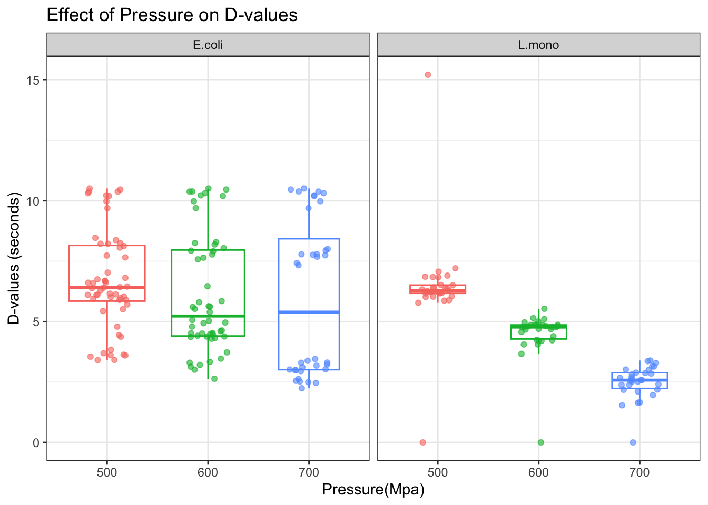
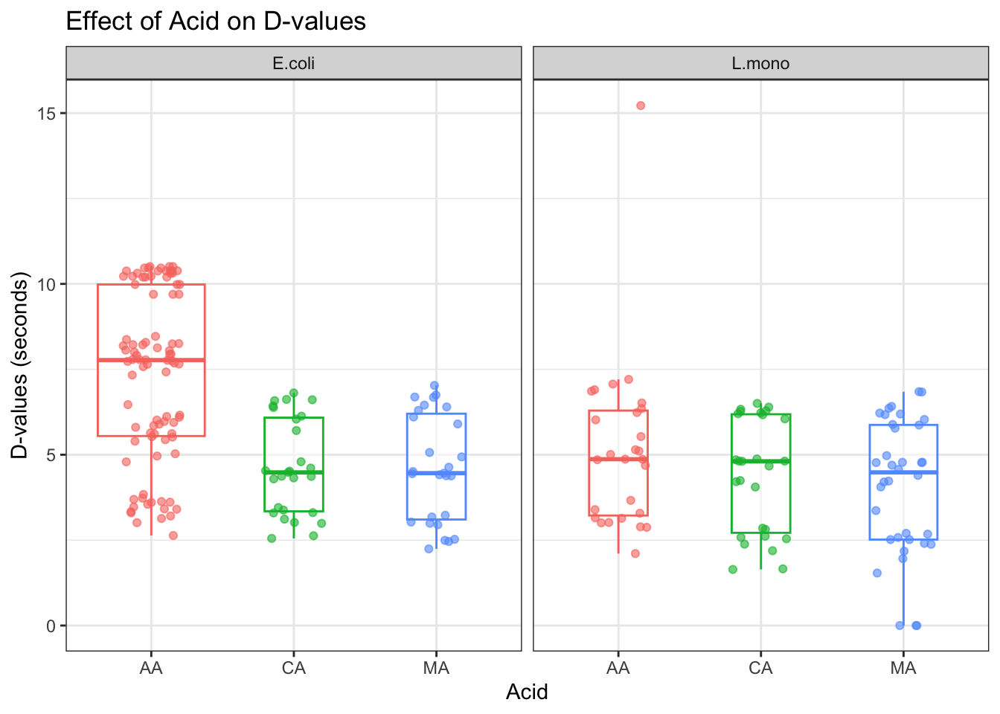
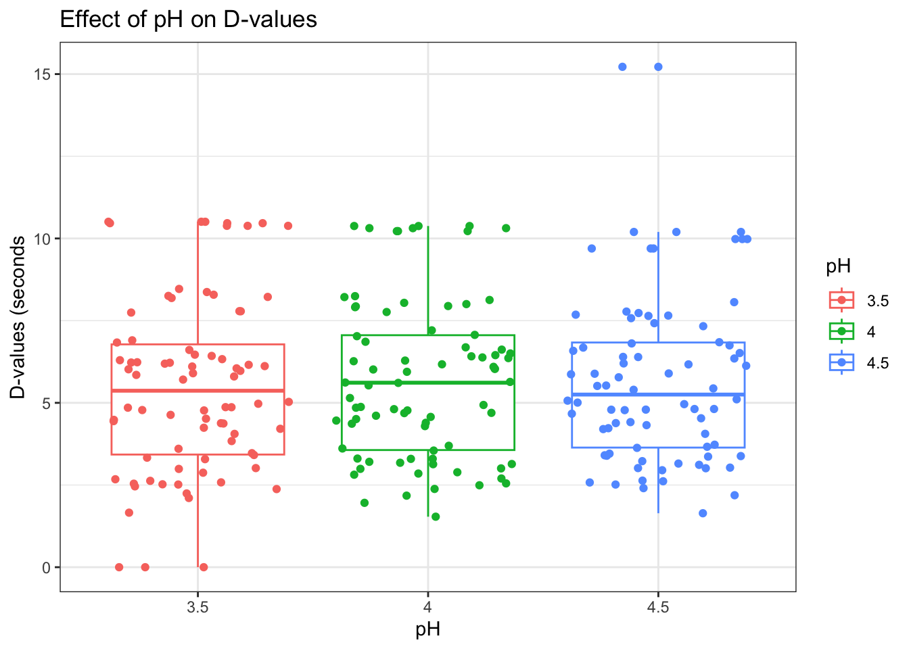
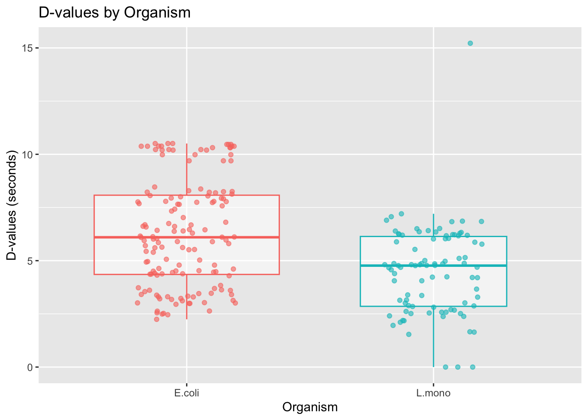
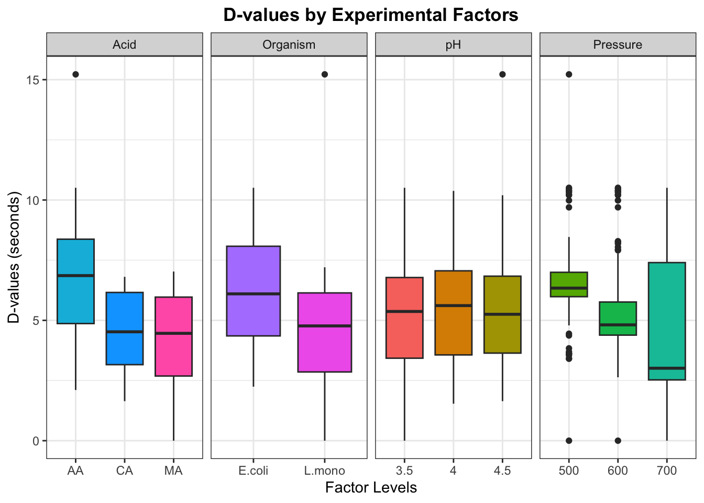
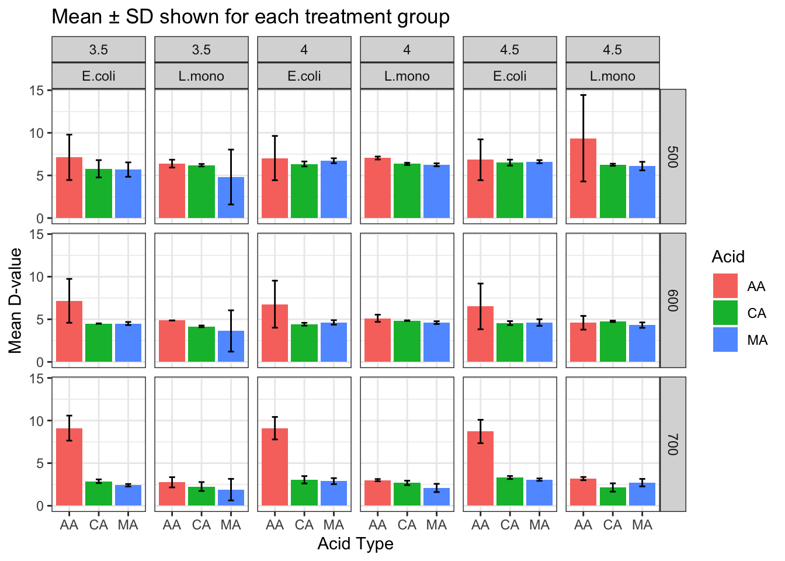
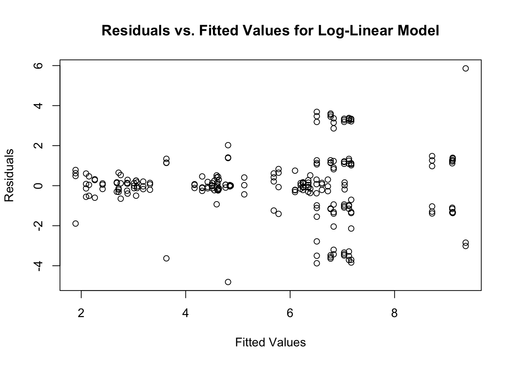
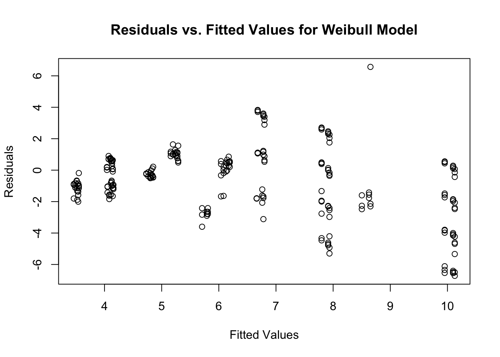

1 + 1[1] 2Quarto enables you to weave together content and executable code into a finished document. To learn more about Quarto see https://quarto.org.
When you click the Render button a document will be generated that includes both content and the output of embedded code. You can embed code like this:
1 + 1[1] 2You can add options to executable code like this
[1] 4The echo: false option disables the printing of code (only output is displayed).
## (a)Loading Required Packages
#install.packages("survival")
library(survival)
library(readxl) # for loading data
library(tidyverse) # For data manipulation and visualization── Attaching core tidyverse packages ──────────────────────── tidyverse 2.0.0 ──
✔ dplyr 1.1.4 ✔ readr 2.1.5
✔ forcats 1.0.0 ✔ stringr 1.5.1
✔ ggplot2 3.5.1 ✔ tibble 3.2.1
✔ lubridate 1.9.4 ✔ tidyr 1.3.1
✔ purrr 1.0.4
── Conflicts ────────────────────────────────────────── tidyverse_conflicts() ──
✖ dplyr::filter() masks stats::filter()
✖ dplyr::lag() masks stats::lag()
ℹ Use the conflicted package (<http://conflicted.r-lib.org/>) to force all conflicts to become errorslibrary(ggplot2) # For plotting (also in tidyverse)
library(car) # For ANOVA assumption checksLoading required package: carData
Attaching package: 'car'
The following object is masked from 'package:dplyr':
recode
The following object is masked from 'package:purrr':
somelibrary(emmeans) # For estimated marginal means and pairwise comparisonsWelcome to emmeans.
Caution: You lose important information if you filter this package's results.
See '? untidy'library(readr) # For reading in CSV files
library(broom) # For tidying model outputs
library(ggpubr) # For plots
#install.packages("multcompView")
library(multcompView)hpp_data <- read_excel("../Data/Data_MD.xlsx")
hpp_data# A tibble: 234 × 6
Organism Pressure pH Acid Rep Response
<chr> <dbl> <dbl> <chr> <dbl> <dbl>
1 L.mono 500 3.5 MA 1 0
2 L.mono 500 3.5 MA 2 6.84
3 L.mono 500 3.5 MA 3 6.22
4 L.mono 500 3.5 MA 4 6.19
5 L.mono 500 4 MA 1 6.17
6 L.mono 500 4 MA 2 6.36
7 L.mono 500 4 MA 3 6.41
8 L.mono 500 4 MA 4 6.03
9 L.mono 500 4.5 MA 1 5.89
10 L.mono 500 4.5 MA 2 5.78
# ℹ 224 more rowsglimpse(hpp_data)Rows: 234
Columns: 6
$ Organism <chr> "L.mono", "L.mono", "L.mono", "L.mono", "L.mono", "L.mono", "…
$ Pressure <dbl> 500, 500, 500, 500, 500, 500, 500, 500, 500, 500, 500, 500, 6…
$ pH <dbl> 3.5, 3.5, 3.5, 3.5, 4.0, 4.0, 4.0, 4.0, 4.5, 4.5, 4.5, 4.5, 3…
$ Acid <chr> "MA", "MA", "MA", "MA", "MA", "MA", "MA", "MA", "MA", "MA", "…
$ Rep <dbl> 1, 2, 3, 4, 1, 2, 3, 4, 1, 2, 3, 4, 1, 2, 3, 4, 1, 2, 3, 4, 1…
$ Response <dbl> 0.000000, 6.835270, 6.218905, 6.191950, 6.172840, 6.361323, 6…summary(hpp_data) Organism Pressure pH Acid
Length:234 Min. :500.0 Min. :3.5 Length:234
Class :character 1st Qu.:500.0 1st Qu.:3.5 Class :character
Mode :character Median :600.0 Median :4.0 Mode :character
Mean :591.5 Mean :4.0
3rd Qu.:700.0 3rd Qu.:4.5
Max. :700.0 Max. :4.5
Rep Response
Min. :1.000 Min. : 0.000
1st Qu.:1.000 1st Qu.: 3.488
Median :2.000 Median : 5.477
Mean :2.077 Mean : 5.609
3rd Qu.:3.000 3rd Qu.: 6.891
Max. :4.000 Max. :15.221 hpp <- hpp_data%>%
mutate (
Rep = factor(Rep),
Pressure = factor(Pressure),
pH = factor(pH),
Acid = factor(Acid),
Organism = factor(Organism),
)
#check for any missing values
sum (is.na(hpp))[1] 0head(hpp)# A tibble: 6 × 6
Organism Pressure pH Acid Rep Response
<fct> <fct> <fct> <fct> <fct> <dbl>
1 L.mono 500 3.5 MA 1 0
2 L.mono 500 3.5 MA 2 6.84
3 L.mono 500 3.5 MA 3 6.22
4 L.mono 500 3.5 MA 4 6.19
5 L.mono 500 4 MA 1 6.17
6 L.mono 500 4 MA 2 6.36summary(hpp) Organism Pressure pH Acid Rep Response
E.coli:144 500:86 3.5:78 AA:117 1:75 Min. : 0.000
L.mono: 90 600:82 4 :78 CA: 54 2:75 1st Qu.: 3.488
700:66 4.5:78 MA: 63 3:75 Median : 5.477
4: 9 Mean : 5.609
3rd Qu.: 6.891
Max. :15.221 geom_point()+
#Dvalues by Pressure on Organism
ggplot(hpp, aes(x = Pressure,
y = Response,
colour = Pressure)) +
labs(
title = "Effect of Pressure on D-values",
x = "Pressure(Mpa)",
y = "D-values (seconds)")+
facet_wrap(~Organism) +
geom_boxplot(varwidth = TRUE, outlier.shape = NA, alpha = 0.5) +
geom_jitter(width = 0.2, alpha = 0.6)+
theme_bw() +
theme(legend.position = "none") 
#D-values by Acid on Organism
ggplot(hpp, aes(x = Acid,
y = Response,
colour = Acid)) +
labs(
title = "Effect of Acid on D-values",
x = "Acid",
y = "D-values (seconds)")+
facet_wrap(~Organism) +
geom_boxplot(varwidth = TRUE, outlier.shape = NA, alpha = 0.5) +
geom_jitter(width = 0.2, alpha = 0.6)+
theme_bw() +
theme(legend.position = "none") 
#D-values by pH
ggplot(hpp, aes(x = pH,
y = Response,
colour = pH
)) +
labs(title = "Effect of pH on D-values",
x = "pH",
y = "D-values (seconds")+
geom_boxplot(varwidth = TRUE)+
geom_jitter()+
theme_bw()+
theme(legend.position = "right"
)
#Dvalues BY Organism
ggplot(hpp, aes(x = Organism,
y = Response,
colour = Organism)) +
labs(
title = "D-values by Organism",
x = "Organism",
y = "D-values (seconds)")+
geom_boxplot(varwidth = TRUE, outlier.shape = NA, alpha = 0.5) +
geom_jitter(width = 0.2, alpha = 0.6)+
theme(legend.position = "none") 
data <- hpp %>%
mutate(
Organism = as.character(Organism),
Pressure = as.character(Pressure),
pH = as.character(pH),
Acid = as.character(Acid)
) %>%
pivot_longer(
cols = c(Organism, Pressure, pH, Acid),
names_to = "Factor",
values_to = "Level"
)
# Create a faceted boxplot
ggplot(data, aes(x = Level, y = Response, fill = Level)) +
geom_boxplot() +
facet_grid(~ Factor, scales = "free_x") +
labs(title = "D-values by Experimental Factors",
x = "Factor Levels", y = "D-values (seconds)") +
theme_bw() +
theme(legend.position = "none") +
theme(
plot.title = element_text(hjust = 0.5, face = "bold"),
plot.subtitle = element_text(hjust = 0.5)
)
ggsave("../Output/D-values.png")Saving 7 x 5 in imagesummary_hpp <- hpp %>%
group_by(Organism, Pressure, pH, Acid, Rep, .groups = "drop") %>%
summarise(
mean_D = mean(Response, na.rm = TRUE),
sd_D = sd(Response, na.rm = TRUE),
n = n()
)`summarise()` has grouped output by 'Organism', 'Pressure', 'pH', 'Acid',
'Rep'. You can override using the `.groups` argument.summary_hpp# A tibble: 169 × 9
# Groups: Organism, Pressure, pH, Acid, Rep [169]
Organism Pressure pH Acid Rep .groups mean_D sd_D n
<fct> <fct> <fct> <fct> <fct> <chr> <dbl> <dbl> <int>
1 E.coli 500 3.5 AA 1 drop 7.23 2.89 4
2 E.coli 500 3.5 AA 2 drop 7.10 3.02 4
3 E.coli 500 3.5 AA 3 drop 7.05 2.92 4
4 E.coli 500 3.5 CA 1 drop 5.04 0.945 2
5 E.coli 500 3.5 CA 2 drop 6.43 NA 1
6 E.coli 500 3.5 CA 3 drop 6.61 NA 1
7 E.coli 500 3.5 MA 1 drop 5.17 1.03 2
8 E.coli 500 3.5 MA 2 drop 6.11 NA 1
9 E.coli 500 3.5 MA 3 drop 6.30 NA 1
10 E.coli 500 4 AA 1 drop 7.08 2.84 4
# ℹ 159 more rowssummary_hpp <- hpp %>%
group_by(Organism, Pressure, pH, Acid) %>%
summarise(mean_D = mean(Response), sd_D = sd(Response), .groups = 'drop')
ggplot(summary_hpp, aes(x = Acid, y = mean_D, fill = Acid)) +
geom_col(position = position_dodge(width = 0.9)) +
geom_errorbar(aes(ymin = mean_D - sd_D, ymax = mean_D + sd_D),
width = 0.2, position = position_dodge(width = 0.9)) +
facet_grid(Pressure ~ pH + Organism) +
labs(
title = "Mean ± SD shown for each treatment group",
y = "Mean D-value",
x = "Acid Type"
) +
theme(
plot.title = element_text(hjust = 0.5, face = "bold"),
plot.subtitle = element_text(hjust = 0.5)
) +
theme_bw() 
ggsave("../Output/mean_sd.png",
height = 4,
width = 6)# Changing to sum-to-zero contrast
options(contrasts = c("contr.sum", "contr.poly"))
# Model fitting
#log-linear model
model1 <- lm(Response ~ Pressure * Organism * Acid * pH, data = hpp)
summary(model1)
Call:
lm(formula = Response ~ Pressure * Organism * Acid * pH, data = hpp)
Residuals:
Min 1Q Median 3Q Max
-4.8115 -0.4240 0.0242 0.6095 5.8592
Coefficients:
Estimate Std. Error t value Pr(>|t|)
(Intercept) 5.060678 0.132720 38.130 < 2e-16 ***
Pressure1 1.461072 0.184883 7.903 2.63e-13 ***
Pressure2 -0.138578 0.189462 -0.731 0.465468
Organism1 0.527329 0.132720 3.973 0.000102 ***
Acid1 1.311900 0.176990 7.412 4.68e-12 ***
Acid2 -0.559477 0.196129 -2.853 0.004844 **
pH1 -0.275395 0.188706 -1.459 0.146202
pH2 0.104673 0.187186 0.559 0.576726
Pressure1:Organism1 -0.533119 0.184883 -2.884 0.004412 **
Pressure2:Organism1 -0.150803 0.189462 -0.796 0.427106
Pressure1:Acid1 -0.536277 0.246468 -2.176 0.030870 *
Pressure2:Acid1 -0.395232 0.249921 -1.581 0.115536
Pressure1:Acid2 0.277554 0.273392 1.015 0.311361
Pressure2:Acid2 0.178871 0.281119 0.636 0.525400
Organism1:Acid1 0.698471 0.176990 3.946 0.000114 ***
Organism1:Acid2 -0.434499 0.196129 -2.215 0.027988 *
Pressure1:pH1 -0.248007 0.260004 -0.954 0.341434
Pressure2:pH1 0.159667 0.272869 0.585 0.559185
Pressure1:pH2 -0.002445 0.262192 -0.009 0.992569
Pressure2:pH2 0.040808 0.265440 0.154 0.877988
Organism1:pH1 0.150377 0.188706 0.797 0.426567
Organism1:pH2 -0.028486 0.187186 -0.152 0.879215
Acid1:pH1 0.138196 0.251061 0.550 0.582696
Acid2:pH1 0.072025 0.279079 0.258 0.796639
Acid1:pH2 -0.128843 0.249921 -0.516 0.606811
Acid2:pH2 0.010247 0.276508 0.037 0.970479
Pressure1:Organism1:Acid1 -0.992110 0.246468 -4.025 8.37e-05 ***
Pressure2:Organism1:Acid1 -0.095311 0.249921 -0.381 0.703383
Pressure1:Organism1:Acid2 0.411132 0.273392 1.504 0.134380
Pressure2:Organism1:Acid2 0.006478 0.281119 0.023 0.981641
Pressure1:Organism1:pH1 0.054187 0.260004 0.208 0.835145
Pressure2:Organism1:pH1 0.058778 0.272869 0.215 0.829693
Pressure1:Organism1:pH2 0.111771 0.262192 0.426 0.670402
Pressure2:Organism1:pH2 -0.138629 0.265440 -0.522 0.602131
Pressure1:Acid1:pH1 -0.156397 0.347464 -0.450 0.653173
Pressure2:Acid1:pH1 0.154685 0.357193 0.433 0.665492
Pressure1:Acid2:pH1 0.201760 0.384164 0.525 0.600096
Pressure2:Acid2:pH1 -0.163312 0.405857 -0.402 0.687875
Pressure1:Acid1:pH2 -0.231812 0.349105 -0.664 0.507528
Pressure2:Acid1:pH2 0.093109 0.351551 0.265 0.791426
Pressure1:Acid2:pH2 -0.003132 0.387864 -0.008 0.993567
Pressure2:Acid2:pH2 -0.063819 0.393348 -0.162 0.871295
Organism1:Acid1:pH1 0.191335 0.251061 0.762 0.446994
Organism1:Acid2:pH1 -0.155711 0.279079 -0.558 0.577576
Organism1:Acid1:pH2 0.092283 0.249921 0.369 0.712375
Organism1:Acid2:pH2 -0.074004 0.276508 -0.268 0.789286
Pressure1:Organism1:Acid1:pH1 0.273900 0.347464 0.788 0.431569
Pressure2:Organism1:Acid1:pH1 -0.226504 0.357193 -0.634 0.526805
Pressure1:Organism1:Acid2:pH1 -0.231277 0.384164 -0.602 0.547914
Pressure2:Organism1:Acid2:pH1 0.163076 0.405857 0.402 0.688303
Pressure1:Organism1:Acid1:pH2 0.119320 0.349105 0.342 0.732909
Pressure2:Organism1:Acid1:pH2 -0.078301 0.351551 -0.223 0.823998
Pressure1:Organism1:Acid2:pH2 0.018057 0.387864 0.047 0.962919
Pressure2:Organism1:Acid2:pH2 0.080893 0.393348 0.206 0.837295
---
Signif. codes: 0 '***' 0.001 '**' 0.01 '*' 0.05 '.' 0.1 ' ' 1
Residual standard error: 1.825 on 180 degrees of freedom
Multiple R-squared: 0.5965, Adjusted R-squared: 0.4777
F-statistic: 5.021 on 53 and 180 DF, p-value: < 2.2e-16#Weibull Fitting
any(hpp$Response <= 0)[1] TRUE # Remove rows with Response <= 0
hpp <- hpp %>% filter(Response > 0)
#addition of a small constant to avoid zero values
hpp <- hpp %>% mutate(Response = Response + 0.001)
model2 <- survreg(Surv(Response) ~ Pressure + pH + Acid + Organism, data = hpp, dist = "weibull")
summary(model2)
Call:
survreg(formula = Surv(Response) ~ Pressure + pH + Acid + Organism,
data = hpp, dist = "weibull")
Value Std. Error z p
(Intercept) 1.6850 0.0221 76.24 < 2e-16
Pressure1 0.2142 0.0287 7.46 8.5e-14
Pressure2 -0.0297 0.0272 -1.09 0.2740
pH1 -0.0107 0.0274 -0.39 0.6961
pH2 0.0039 0.0272 0.14 0.8859
Acid1 0.3306 0.0319 10.37 < 2e-16
Acid2 -0.1690 0.0319 -5.30 1.2e-07
Organism1 0.0787 0.0241 3.27 0.0011
Log(scale) -1.2301 0.0524 -23.50 < 2e-16
Scale= 0.292
Weibull distribution
Loglik(model)= -457.5 Loglik(intercept only)= -525.8
Chisq= 136.47 on 7 degrees of freedom, p= 2.8e-26
Number of Newton-Raphson Iterations: 6
n= 231 # Predict values based on the model
predicted_response <- predict(model2, type = "response")
##Weibul Distribution Plot
# Extract coefficients and parameters from the model
shape <- 1 / model2$scale # Shape parameter
scale <- exp(model2$coef) # Scale parameter
# Create a custom survival curve
time <- seq(0, max(hpp$Response), length.out = 100) # Time points
survival_prob <- exp(-(time / scale)^shape) # Survival probabilitiesWarning in time/scale: longer object length is not a multiple of shorter object
length# Plot the survival curve
plot(time, survival_prob, type = "l", col = "blue",
main = "Weibull Survival Curve", xlab = "Time", ylab = "Survival Probability")
# Residuals for Log-Linear Model
res_loglinear <- residuals(model1)
##Residual Vs Fitted
fitted_values_loglinear <- fitted(model1)
plot(fitted_values_loglinear, res_loglinear, main = "Residuals vs. Fitted Values for Log-Linear Model", ylab = "Residuals", xlab = "Fitted Values")
# Residuals for Weibull Model
res_weibull <- residuals(model2)
## Residual Vs Fitted
fitted_values_weibull <- fitted(model2)
plot(fitted_values_weibull, res_weibull, main = "Residuals vs. Fitted Values for Weibull Model", ylab = "Residuals", xlab = "Fitted Values")
#QQ plot for log-linear model
qqnorm(res_loglinear, main = "Q-Q Plot for Log-Linear Model Residuals")
qqline(res_loglinear)
#QQ plot for Weibull model
qqnorm(res_weibull, main = "Q-Q Plot for Weibull Model Residuals")
qqline(res_weibull)
# Predict with log-Linear Model
pred_loglinear <- predict(model1, type = "response")
# Predict with Weibull Model
pred_weibull <- predict(model2, type = "response")
print(pred_loglinear) 1 2 3 4 5 6 7 8
4.811531 4.811531 4.811531 4.811531 6.244973 6.244973 6.244973 6.244973
9 10 11 12 13 14 15 16
6.093999 6.093999 6.093999 6.093999 3.630371 3.630371 3.630371 3.630371
17 18 19 20 21 22 23 24
4.607425 4.607425 4.607425 4.607425 4.316159 4.316159 4.316159 4.316159
25 26 27 28 29 30 31 32
1.891686 1.891686 1.891686 1.891686 2.092400 2.092400 2.092400 2.092400
33 34 35 36 37 38 39 40
2.715538 2.715538 2.715538 2.715538 6.201790 6.201790 6.201790 6.350990
41 42 43 44 45 46 47 48
6.350990 6.350990 6.254174 6.254174 6.254174 4.169453 4.169453 4.169453
49 50 51 52 53 54 55 56
4.845125 4.845125 4.845125 4.764391 4.764391 4.764391 2.259760 2.259760
57 58 59 60 61 62 63 64
2.259760 2.681229 2.681229 2.681229 2.148429 2.148429 2.148429 6.385398
65 66 67 68 69 70 71 72
6.385398 6.385398 7.043486 7.043486 7.043486 9.361521 9.361521 9.361521
73 74 75 76 77 78 79 80
4.862248 4.862248 4.862248 5.121962 5.121962 5.121962 4.593036 4.593036
81 82 83 84 85 86 87 88
4.593036 2.755950 2.755950 2.755950 3.010982 3.010982 3.010982 3.186416
89 90 91 92 93 94 95 96
3.186416 3.186416 5.686596 5.686596 5.686596 6.722661 6.722661 6.722661
97 98 99 100 101 102 103 104
6.608539 6.608539 6.608539 5.686596 4.507061 4.507061 4.634224 4.634224
105 106 107 108 109 110 111 112
4.634224 4.620987 4.620987 4.620987 2.408585 2.408585 2.408585 2.887457
113 114 115 116 117 118 119 120
2.887457 2.887457 3.068389 3.068389 3.068389 5.778628 5.778628 5.778628
121 122 123 124 125 126 127 128
6.347350 6.347350 6.347350 6.506027 6.506027 6.506027 5.778628 4.499503
129 130 131 132 133 134 135 136
4.499503 4.421682 4.421682 4.421682 4.548808 4.548808 4.548808 2.877848
137 138 139 140 141 142 143 144
2.877848 2.877848 3.050347 3.050347 3.050347 3.316073 3.316073 3.316073
145 146 147 148 149 150 151 152
7.126139 7.126139 7.126139 7.126139 7.169593 7.169593 7.169593 7.169593
153 154 155 156 157 158 159 160
9.112940 9.112940 7.034404 7.034404 7.034404 7.034404 6.775069 6.775069
161 162 163 164 165 166 167 168
6.775069 6.775069 9.104541 9.104541 6.833287 6.833287 6.833287 6.833287
169 170 171 172 173 174 175 176
6.510700 6.510700 6.510700 6.510700 8.718725 8.718725 7.126139 7.126139
177 178 179 180 181 182 183 184
7.126139 7.126139 7.169593 7.169593 7.169593 7.169593 9.112940 9.112940
185 186 187 188 189 190 191 192
7.034404 7.034404 7.034404 7.034404 6.775069 6.775069 6.775069 6.775069
193 194 195 196 197 198 199 200
9.104541 9.104541 6.833287 6.833287 6.833287 6.833287 6.510700 6.510700
201 202 203 204 205 206 207 208
6.510700 6.510700 8.718725 8.718725 7.126139 7.126139 7.126139 7.126139
209 210 211 212 213 214 215 216
7.169593 7.169593 7.169593 7.169593 9.112940 9.112940 7.034404 7.034404
217 218 219 220 221 222 223 224
7.034404 7.034404 6.775069 6.775069 6.775069 6.775069 9.104541 9.104541
225 226 227 228 229 230 231 232
6.833287 6.833287 6.833287 6.833287 6.510700 6.510700 6.510700 6.510700
233 234
8.718725 8.718725 print(pred_loglinear) 1 2 3 4 5 6 7 8
4.811531 4.811531 4.811531 4.811531 6.244973 6.244973 6.244973 6.244973
9 10 11 12 13 14 15 16
6.093999 6.093999 6.093999 6.093999 3.630371 3.630371 3.630371 3.630371
17 18 19 20 21 22 23 24
4.607425 4.607425 4.607425 4.607425 4.316159 4.316159 4.316159 4.316159
25 26 27 28 29 30 31 32
1.891686 1.891686 1.891686 1.891686 2.092400 2.092400 2.092400 2.092400
33 34 35 36 37 38 39 40
2.715538 2.715538 2.715538 2.715538 6.201790 6.201790 6.201790 6.350990
41 42 43 44 45 46 47 48
6.350990 6.350990 6.254174 6.254174 6.254174 4.169453 4.169453 4.169453
49 50 51 52 53 54 55 56
4.845125 4.845125 4.845125 4.764391 4.764391 4.764391 2.259760 2.259760
57 58 59 60 61 62 63 64
2.259760 2.681229 2.681229 2.681229 2.148429 2.148429 2.148429 6.385398
65 66 67 68 69 70 71 72
6.385398 6.385398 7.043486 7.043486 7.043486 9.361521 9.361521 9.361521
73 74 75 76 77 78 79 80
4.862248 4.862248 4.862248 5.121962 5.121962 5.121962 4.593036 4.593036
81 82 83 84 85 86 87 88
4.593036 2.755950 2.755950 2.755950 3.010982 3.010982 3.010982 3.186416
89 90 91 92 93 94 95 96
3.186416 3.186416 5.686596 5.686596 5.686596 6.722661 6.722661 6.722661
97 98 99 100 101 102 103 104
6.608539 6.608539 6.608539 5.686596 4.507061 4.507061 4.634224 4.634224
105 106 107 108 109 110 111 112
4.634224 4.620987 4.620987 4.620987 2.408585 2.408585 2.408585 2.887457
113 114 115 116 117 118 119 120
2.887457 2.887457 3.068389 3.068389 3.068389 5.778628 5.778628 5.778628
121 122 123 124 125 126 127 128
6.347350 6.347350 6.347350 6.506027 6.506027 6.506027 5.778628 4.499503
129 130 131 132 133 134 135 136
4.499503 4.421682 4.421682 4.421682 4.548808 4.548808 4.548808 2.877848
137 138 139 140 141 142 143 144
2.877848 2.877848 3.050347 3.050347 3.050347 3.316073 3.316073 3.316073
145 146 147 148 149 150 151 152
7.126139 7.126139 7.126139 7.126139 7.169593 7.169593 7.169593 7.169593
153 154 155 156 157 158 159 160
9.112940 9.112940 7.034404 7.034404 7.034404 7.034404 6.775069 6.775069
161 162 163 164 165 166 167 168
6.775069 6.775069 9.104541 9.104541 6.833287 6.833287 6.833287 6.833287
169 170 171 172 173 174 175 176
6.510700 6.510700 6.510700 6.510700 8.718725 8.718725 7.126139 7.126139
177 178 179 180 181 182 183 184
7.126139 7.126139 7.169593 7.169593 7.169593 7.169593 9.112940 9.112940
185 186 187 188 189 190 191 192
7.034404 7.034404 7.034404 7.034404 6.775069 6.775069 6.775069 6.775069
193 194 195 196 197 198 199 200
9.104541 9.104541 6.833287 6.833287 6.833287 6.833287 6.510700 6.510700
201 202 203 204 205 206 207 208
6.510700 6.510700 8.718725 8.718725 7.126139 7.126139 7.126139 7.126139
209 210 211 212 213 214 215 216
7.169593 7.169593 7.169593 7.169593 9.112940 9.112940 7.034404 7.034404
217 218 219 220 221 222 223 224
7.034404 7.034404 6.775069 6.775069 6.775069 6.775069 9.104541 9.104541
225 226 227 228 229 230 231 232
6.833287 6.833287 6.833287 6.833287 6.510700 6.510700 6.510700 6.510700
233 234
8.718725 8.718725 predicted_values <- predict(model1, newdata = hpp, type = "response")
plot(hpp$Response, predicted_values, col = "red",
main = "Log-Linear Model Fit", xlab = "Observed D-Values", ylab = "Predicted D-Values")
predicted_values <- predict(model2, newdata = hpp, type = "response")
plot(hpp$Response, predicted_values, col = "red",
main = "Weibul Modell Fit", xlab = "Observed D-Values", ylab = "Predicted D-Values")
# Calculate AIC for Log-linear model
aic_loglinear <- AIC(model1)
# Calculate AIC for Weibull model
aic_weibull <- AIC(model2)
# Display AIC values
print(paste("AIC for Log-Linear Model:", aic_loglinear))[1] "AIC for Log-Linear Model: 994.287014158538"print(paste("AIC for Weibull Model:", aic_weibull))[1] "AIC for Weibull Model: 933.091188880565"